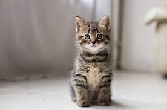
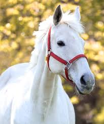
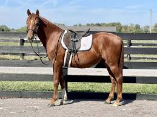
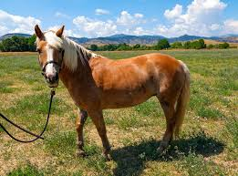
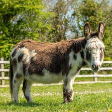
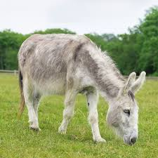
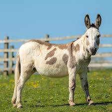

Our Services
Dogs, cats, horses and donkeys looking for loving homes. All animals are sterilised, vaccinated and microchipped before adoption.
Below are our available lovely animals :

HUSKY
Breed: German Sherpard
Gender: Male
DOB: 2010-09-01
Personality: Loyal guard dog, super smart
Fun fact: He knows 20+ commands and loves swimming

AMBER
Breed: Labrador Retriever
Gender: Male
DOB: 2015-04-12
Personality: Friendly + obsessed with tennis balls
Fun fact: He will carry your shoes to greet you at the door

ALLY
Breed: shih Tzu Mix
Gender: Male
DOB: 2020-03-01
Personality: Lap dog + total cuddle monster
Fun fact: He snores louder than a tractor when sleeping
Cats

Milo
Breed: Domestic Short Hair
Gender: Male
DOB: 2021-05-10
Personality: Playful kitten energy
Fun fact: He chases laser dots for hours

Luna
Breed: Stanadard DSH
Gender: Female
DOB: 2020-08-22
Personality: Calm, chatty, sunbather
Fun fact: She “talks” back when you speak to her

Simba
Breed: Maine Coon X
Gender: Male
DOB: 2019-11-15
Personality: Gentle giant, fluffy king
Fun fact: His tail is fluffier than a pillow and he loves brushing
Horses

Thunder
Breed: Thoroughbred
Gender: Gelding
DOB: 2015-03-22
Personality:Gentle giant, loves Fun Fact:Needs daily exercise.

Spirit
Breed: Arabian
Gender: Mare
DOB: 2016-07-10
Personality: Elegant + super fast
Fun fact: She recognizes her owners whistle from 500m away

Buddy
Breed: Quarter Horse
Gender: Gelding
DOB: 2014-01-05
Personality: Calm, great for beginners
Fun fact: Hes a cowboy horse - loves herding and trail rides
Donkeys

Jack
Breed: Standard Donkey
Gender: Male
DOB: 2016-08-15
Personality: Gentle + patient with kids
Fun fact: He brays loudest at sunrise like an alarm clock
Needs: Dry shelter + companion donkey. Hates being alone
Special skill: Great pack donkey for light hiking gear

Daisy
Breed: Miniature Donkey
Gender: Female
DOB: 2018-04-20
Personality: Sassy but super cuddly
Fun fact: Shes only 3ft tall but thinks shes a horse
Needs: Small paddock + lots of brushing
Special skill: Perfect therapy donkey for farmschool visits

Burro
Breed: Mammoth Donkey
Gender: Male
DOB: 2015-11-30
Personality: Calm giant, very stubborn but loyal
Fun fact: His ears are 30cm long - best in the whole shelter
Needs: Big space + strong fencing. Hes 14 hands tall!
Special skill: Can carry 120kg safely - ideal for trail work
Animal Adoptions
We provide comprehensive animal welfare services to Bronkhorstspruit and surrounding areas.
Email: admin@wetnose.co.za
Veterinary Clinic
Affordable veterinary care for the community. Includes consultations, vaccinations, sterilisation and basic treatments.
Email: vet@wetnose.co.za
Animal Cruelty Complaints
Report suspected animal abuse and neglect. We investigate and intervene where possible.
Email: shelter@wetnose.co.za
Volunteering
Help with feeding, cleaning, walking dogs and socialising cats. No experience needed, just a love for animals.
Hours: Sat-Sun 10:00-15:00
Donations & Sponsorships
Support our work through monetary donations, food, blankets, or sponsoring an animal's care.
Email: admin@wetnose.co.za
Need Help or Want to Help?
Fill out our enquiry form and we'll get back to you within 2-3 working days.
Send an Enquiry